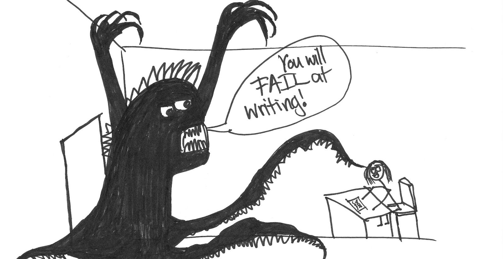

The other day at work, when I mentioned to my collegue about my blog, he was surpurised I maintained one and the talk of the minute was about blogging.
When I meet people that have something to say, and an interesting way of saying it, I encourage them to blog. But there's one big hurdle many people simply never get past: the actual writing. I decided I was going to nudge people to try overcome the initial hesitation to write and blog.
Writing is hard and I get that and respect it. Even with a compelling desire to write, they still must overcome the inertia of going from a “not writing” state to a “writing” state. Its not something you can fake and not something you can buy. You have to work at it to gradually get better.
Using prompts and trusting what springs to mind in response is an excellent strategy for making the transition. In this way, writers get at “things slant,” as Emily Dickinson is famous for advising us that we must [write] if we are to find what is at the bottom of our hearts and minds. When I use prompts I like, I trust that my insight will surface if I am not looking directly at it, but rather at a strategy for writing.
In principle why even creative people fear writing. I am hoping that pointing out these will get you to understand the characteristic symptoms involved in not being able to write and help you overcome them. It stems from some the following:
1. Rejection: Harboring a fear that no one will like your article is enough to stop you dead in your tracks. Rejection happens. You can’t please everyone all the time.
2. Inadequacy: The fear that nothing you write is good enough. Even the critics thought Shakespeare was lousy; 400 years later, Shakespeare’s works are still around and doing well. Just goes to show how much critics know.
3. Success: The trick is to deal with the situation one step at a time. Worry about success when you get there.
4. Revealing too much: This works for you and against you. You’ll run up against people who disagree with you, but on the other hand, you might end up touching your readers deeply. But as writers we often tend to add some bit of personal opinions into it, intentionally or otherwise. It ends up being your USP and style.
5. Having only one book: Realize that you are a writer and every experience you have is unique to you. You will always have stories to tell. Some may take longer than others to unwind, but those tales in you are waiting to come out.
6. Being too old dated: Meh, forget this one. With age cometh experience. Experience adds depth to your writing.
7. Need too much details and depth: Details are important and needed to make a point. Enjoy your research before you write.
If you're still hesitant, I highly recommend John Scalzi's Writing Tips for Non-Writers Who Don't Want to Work at Writing, and Brian Marick's Hints for Revising . They're absolutely dead on with every point.
<- Back to Blogs
Fear and Hesitation in Writing
adarshpatil
1st April 2014
